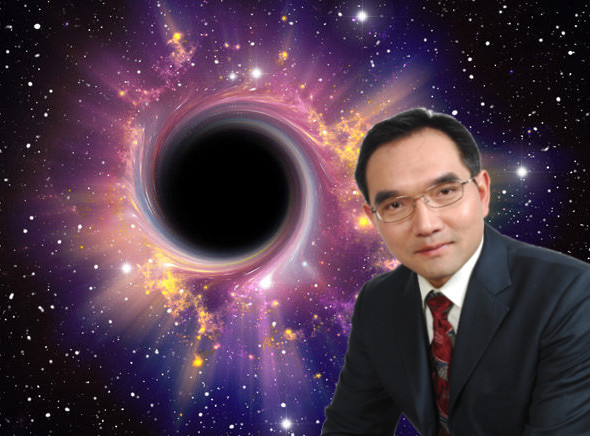

Let's say you have just summited Mt. Everest around midnight. While this may be an impressive accomplishment, you remember that around 4000 other people have also done it. Not feeling so cool now, huh? Disheartened, you look up into the beautiful night sky and cry, "God, how can I be impressive?" because you believe in God. Then, a deep, daunting voice from within you says, "Hello." Shortly afterwards, you see a bald eagle the size of 5 galaxies flying overhead, blocking the stars! No one's ever seen this bird before. Suddenly the voice says, "If you can correctly name this bird, then I will let you live. However, if you can't name it, then I shall-" The voice pauses for dramatic effect. "-kill you!" Befuddled by the threat, you blindly guess: "umm... super-bald eagle?"
"WRONG!!" The voice screams. "Not that it matters anymore, but if you had the ability to correctly identify birds that have never been seen before, like Ethan Hsiao, then you would have lived. Too bad you never came across his written guide; it's quite good." The "super-bald eagle" then swoops towards you, and your final thought is about how cold it is.
About Ornithology
People who call themselves ornithologists tend to be egocentric and pretentious in nature. When I think of the word "ornithologist," an image of a ridiculously ugly asian kid dressed in terrible clothes pops up in my head. Below is an image of the average ornithologist for more curious readers. The thing is, ornithologists identify birds by memory—this is absolutely wrong. I realize how tedious this is, so I want to promulgate the easy, correct way.
This is an ornithologist. He is crying because he doesn't know many things.
Guides to Avoid
These guides are run by typical, lame ornithologists who don't know my secret. To put it metaphorically, they are doing long-term division without a calculator. Except, in our case, the "calculator" of bird identification is already within you.
Proof
This section is gratuitous; my method simply works. However, some people still ask for it to be kept because of the impossibly vivacious, sparkling face of the man who survived—actually, you should just read his story below.
This is not the man who survived. It is a real example of someone who doubted the truth. Our friend Charlie was once intense enough to almost make it past a black hole on his own, but now the only thing that remains of his past intenseness is his lump, and even that is slowly disappearing. When you hear Charlie's story, don't feel pity for him; instead, use it as evidence to believe my guide. Unless you are Charlie, then it's okay to be sad.

There he is. THE MAN WHO SURVIVED A BLACK HOLE. Although some might consider Weixun krazy for his impossible feat, he is actually a wise man. In fact, he couldn't have survived the black hole if it weren't for my guide! You see, in order to get to the black hole, there were many tests that involved bird identification. Since he had my guide, Weixun could be absolutely sure that no harm would ever affect him!
The Secret
Millions of years ago, there lived an extremely small Chinese tribe among the Andes Mountains. Although history books do not record their existence, I know of them because I am one of their last descendants. This tribe carried out a simple, peaceful lifestyle during the daytime, but at night they meditated instead of sleeping. Because of this, the tribe discovered the truth behind birds, their origin, and their connection to humankind—one of the most important achievements of the human race. They discovered, through meditation, that the way to flip open the internal field guide to all birds is to simply concentrate on your calf. And that’s it!
Here is an ancient drawing, by the Chinese tribe, that was originally designed to show children where to focus when trying to name a bird. The Chinese characters have been translated to English, and it says "EBD"—Embedded Bird Dictionary. If you focus hard enough on the EBD, then the names of birds will come to you.
Here, a super rich and buff person with a rolex watch points to where you should focus on. If someone this rich trusts me, then you should too!
Conclusion
Try concentrating on your EBD at least 5 minutes a day. When you're feeling good, go outside and look at some birds while focusing on your EBD; eventually, you will know the name of any bird you look at. When you get this power, feel free to climb Mount Everest—you just might become friends with the "super-bald eagle."
Made by @hethan